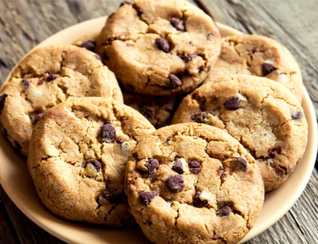

bas de page
Les Cookies
Ingrédients :
- Pépites de chocolat
- Oeufs
- Farine
- Sucre en poudre
- Beurre
- Levure chimique
- Sucre vanillé
Préparation
- Pendant que vitre four préchauffe à 180 degré , faites ramolir le beurre et les fractionner en petits morceaux . Ajouter le sucre, l'oeuf et mélangez.
- Ajoutez le sucre vanillé et la levure chimique puis versez la farine petit à petit et incorporez le chocolat
- Les mettres au four en laissant de la place entre les cookies
- Après environ 10 min , les laissez refroidir avant de les décoller de la plaque et les dégustez.

Pour d'autres recettes , retrouvez-nous sur Journal des femmes